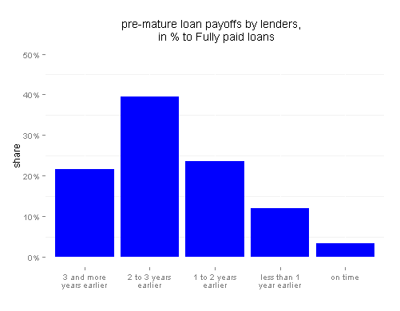
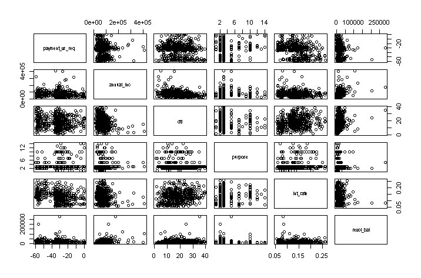

Analysis is based on Lending Club dataset of loans data since 2011, when current credit policy started to apply. Data on over 600 thousand lenders is available (updated on June 30th).
I assume that actual number of loan life could be predicted by latent variable 'loan strain' associated with borrower's financial condition (income, employment etc.), loan configuration (assigned grade, term, etc.) and other extraneous factors. Little strain leads to pre-mature payments while high strain leads to defaults. Moreover we could identify what parameters of loan could be manipulated to reach target level of strain.
See MoreLending Club is peer-to-peer finance service; it provides lenders and borrowers platform to lend money directly. Lending Club makes money by charging investors 1% of total receipts during loan payment and charging lenders origination fee. Origination fee depends on assigned loan grade and is instant, fixed payment. Commission from investors receipts on other hand is variable and depends on for how long borrower decides to extend her payments. For example, borrower may decide to repay loans instantly, with no penalty applied. This project attempts to evaluate what parameters associate with lenders period of payment.
It is obvious that over 60% of borrowers pay their loan 2 or more years earlier, which is arguably very high rate.
Scatterplots below show simple association for sample of data between number of periods paid pre-maturely (top left corner) and other variables. It signals lack of simple linear associations. I want to tackle this challenge by applying machine learning techniques.
Your estimate is: